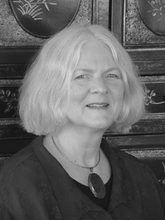

C.G. Jung Society, Seattle C.G. Jung Society, Seattle
C.G. Jung Society, Seattle C.G. Jung Society, SeattleLecture: Friday, December 9, 2005, 7 to 9 p.m.
Good Shepherd Center, Room 202, 4649 Sunnyside Ave., Seattle
$10 member, $15 nonmembers
2 CEUs

One of the more interesting ways Jung defined Individuation was that it is `a series of wrong-turnings'. Early in life, our path seems at first aimless. We travel, correcting as we go, over a vast inner landscape. As we grow to maturity, our turnings are less pronounced, our path becomes more directional, and finally, we participate in the making of an inner map.This winding path, the dialectical model, is mirrored in the lines of W.B. Yeats, "the flaming circle of our days gyring, spiring to and fro in those great ignorant leafy ways." This is path of the Soul through life and lives, returning to source, or, in Jung's sense, coming to consciousness.
The tripartite model for Individuation based on Yeats' work with the Tree of Life is the foundation for this lecture. We'll explore the levels of consciousness described at each level of Initiation and the archetypal images of the Tarot, each card a path on the Tree of Life. History, poetry, and imagery - the many faces of the Fool and activities of the Fool - are the components of this lecture. Sources include Jung, Yeats, Kathleen Raine, Paul Foster Case, Gareth Knight, and Dion Fortune.
Workshop: Saturday, December 10, 2005, 10 a.m. to 4 p.m.
Good Shepherd Center, Room 202, 4649 Sunnyside Ave., Seattle
$40 members, $50 nonmembers
5 CEUs
To learn about preregistering for the workshop, see Preregistration Policy and Form.
Yeats wrote that man's only identity is that of a pilgrim of eternity: a life of drifting like a river from change to change. The paths of the Tree of Life offer a map and the tarot images define the archetypal experience. The tarot deck is a Renaissance invention. It remains relevant to our time because of the timeless nature of the archetypes of human life, which are the content of the tarot. We all want to know: who we are, where we are going, where we came from, and to what end. In this workshop, using the map provided by Tree of Life and the paths depicted by Tarot cards, we will explore the levels of consciousness attributed to each of the three levels of Initiation. Encoded in the Tarot sequence from card 15 - 21 is a series of images that define spiritual awareness. Our final exercise for the day will be to examine the kinds of experiences that describe coming to cosmic consciousness.
For the workshop: Bring a deck of cards, preferably the Ryder-Waite Deck. Books: Paul Foster Case, The Tarot. McCoy Publishing, Richmond, VA, 1947. Gareth Knight, A Practical Guide to Qabalistic Symbolism. Weiser Books, Boston, MA, 2001. Gareth Knight, Magic and the Western Mind: Ancient Knowledge and the Transformation of Consciousness. Llewellyn Publications, St. Paul, MN, 1991.
Anne de Vore, Ph.D., is a Jungian analyst, trained in the Traditional school derived from the work of C.A. Meier. Her analytic lineage is from Emma Jung through David Hart. This school of analysis is closest to the Classical use of dreams to indicate the source of the illness as well as to constellate the healing symbol. The main method of the Meier lineage is to follow the dreams, and see where the energy wants to go. Anne has been in private practice in Seattle since 1980. She holds B.A., M.A., and Ph.D. degrees from the University of Colorado at Boulder. She is a Diplomate of the Inter-Regional Society of Jungian Analysts. She has training in Classics and Classical Studies from the University of Washington. Anne's Web site is www.heru-ib.com.
This program has been approved for 7 CEU’s by the Washington Chapter, National Association of Social Workers (NASW) for Licensed Social Workers, Licensed Marriage & Family Therapists and Licensed Mental Health Counselors. Provider number is #1975-157. The cost to receive a certificate is as follows: 7.0 units for lecture and workshop $15; 2.0 units for the Friday lecture $10; 5.0 units for the Saturday workshop $10.
Updated: 7 September, 2005
webmaster@jungseattle.org